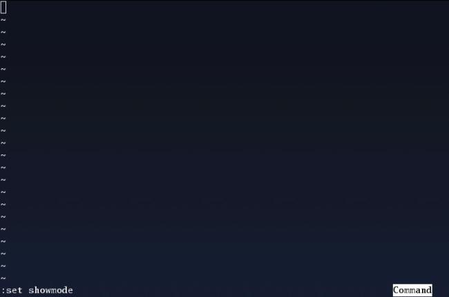

Pozwolê sobie, na wprowadzenie Was drodzy czytelnicy, w ¶wiat magii jaki oferuje nam edytor vi.
Na pierwszy rzut oka, vi nie jest imponuj±cym edytorem. Ale posiada jedn± niezaprzeczalnie wielk± zaletê. Edytor vi dostêpny jest we wszystkich klonach systemu UNIX. Gorzej, zazwyczaj vi jest domy¶lnym edytorem dla wiêkszo¶ci U*nix-ów. Czêsto niektóre programy wykorzystuj± vi jako swój bazowy edytor opcji. Tym samym je¶li zostaniecie zmuszeni do pracy na jakim¶ U*nix-ie na pewno bêdzie tam czekaæ na was edytor vi. Mo¿ecie mi wierzyæ lub nie, ale przekonacie siê o tym do¶æ szybko. I proszê mi tu nie pisaæ w komentarzach, ¿e wam to nie potrzebne bo u¿ywacie mcedit, pico, joe... tak zgadzam siê u¿ywacie tego na tym okre¶lonym komputerze/serwerze... na innym ju¿ nie koniecznie ;p
Vi jako edytor z lat 70 ubieg³ego stulecia doczeka³ siê kilku m³odszych braci. Najpopularniejszym jest VIM (mianem VIM-a czêsto okre¶la siê równie¿ wszystkie edytory vi podobne). Jak mo¿na zobaczyæ po odpaleniu VIM-a jest to edytor bardziej rozbudowany, posiadaj±cy wiêcej opcji, wiêcej mo¿liwo¶ci. Prawdopodobnie VIM jest najbardziej lubianym edytorem programistów, ze wzglêdu na dostêpne opcje pod¶wietlania tekstu/sk³adni jêzyków (kolor AND/OR pogrubienie) oraz przyjazny system pomocy.
1. To, co ka¿dy powinien wiedzieæ o vi !!!
Zaczynamy (z linii poleceñ):
$ vi

Jak widzisz odpalany z linii poleceñ, bez menu, bez podpowiedzi. Po prostu czarny ekran!
Na tym czarnym ekranie mo¿na wydzieliæ dwa obszary robocze: obszar edycji tekstu i obszar poleceñ.
Obszar poleceñ to tak naprawdê ostatnia linia na dole ekranu, a obszar edycji tekstu to pozosta³e linie.
Tym samym mo¿emy powiedzieæ, ¿e vi posiada dwa tryby pracy:
TRYB POLECEÑ i TRYB EDYCJI:
- w trybie poleceñ wydajesz polecenia okre¶laj±ce, co chcesz zrobiæ;
- w trybie edycji wpisujesz tekst do pliku, który aktualnie edytujemy.
Po uruchomieniu vi domy¶lnie znajdujemy siê w trybie poleceñ.
Przechodzenie do trybu edycji odbywa siê w nastêpuj±cy sposób:
UWAGA: [ESC] - mam tu na my¶li przycisk w górnym lewym rogu klawiatury "Escape"
nie musisz go wciskaæ za ka¿dym razem jak chcesz wykonaæ jakie¶ polecenie podwarunkiem ¿e ju¿ jeste¶ w "trybie poleceñ", je¶li nie jeste¶ pewny wci¶nij [ESC] ;)))
[ESC] i
--> teraz mo¿emy pisaæ ;)
lub przez wci¶niêcie przycisku [Insert]
--> teraz równie¿ mo¿emy pisaæ....
Koniec tekstu(pliku) oznaczony jest znakiem "~" (tylda) na pocz±tku linii.
Je¶li pragniesz powróciæ do trybu poleceñ, bezwzglêdnie wci¶nij przycisk [ESC]
Przygotuj siê na to, ¿e [ESC] bêdzie najczê¶ciej u¿ywanym przyciskiem, tak jak i "i" ;)
Aby wyj¶æ z vi:
bez zapisu tekstu do pliku
[ESC] :q!
z zapisem tekstu do pliku
[ESC] :wq nazwa_pliku
2. NIE KONIECZNIE zaawansowane polecenia.
UWAGA: vi rozró¿nia wielko¶æ Znaków!!!
Opcje przydatne:
[ESC] :set list
--> Znaki '$', które siê pojawi³y, pokazuj± koniec ka¿dej linii.
[ESC] :set nolist
--> wy³±cza :set list
[ESC] :set number
--> w³±czenie numeracji linii
[ESC] :set nonumber
--> wy³±cza :set number
[ESC] :set showmode
--> w³±cza pokazywanie trybów pracy
[ESC] :set noshowmode
--> wy³±cza :set showmode
a) Przemieszczanie siê po tek¶cie.
Przemieszczanie siê po tek¶cie odbywa siê przy pomocy kursorów w obu
trybach pracy. Dodatkowo w trybie poleceñ mo¿na u¿yæ przycisków [h] [j] [k] [l] ,
chocia¿ ja wolê kursory ;)
Inne opcje umo¿liwiaj±ce przemieszczanie siê po tek¶cie.
[ESC] [CTRL] + f
--> przej¶cie o 1 stronê do przodu
[ESC] [CTRL] + b
--> przej¶cie o 1 stronê do ty³u
[ESC] G
--> przej¶cie na koniec pliku(tekstu)
mo¿esz równie¿ u¿yæ [ESC] :$
[ESC] [CTRL] u
--> przechodzi w górê o pó³ ekranu
[ESC] [CTRL] d
--> przechodzi w dó³ o pó³ ekranu
[ESC] [CTRL] y
--> przesuwa ekran w górê, nie przemieszczaj±c kursora
[ESC] [CTRL] e
--> przesuwa ekran w dó³, nie przemieszczaj±c kursrora
[ESC] M
--> skocz do ¶rodka ekranu.
[ESC] L
--> skocz do koñca ekranu.
[ESC] H
--> skocz do pocz±tku ekranu.
[ESC] }
--> paragraf w dó³.
[ESC] {
--> paragraf w górê.
[ESC] 0 (zero)
--> przenosi kursor na pocz±tek linii
[ESC] $
--> przenosi kursor na koniec linii
[ESC] ^
--> przenosi kursor do pierwszego znaku w linii
(pomijaj±c tzw. bia³e znaki)
[ESC] w
--> przesuwa kursor do pocz±tku nastêpnego s³owa
[ESC] b
--> przesuwa kursor do pocz±tku poprzedniego s³owa
[ESC] e
--> przesuwa kursor na koniec nastêpnego s³owa
[ESC] :9
--> przenosi kursor na pocz±tek 9 linii
[ESC] 18|
--> przenosi kursor na 18 znak w aktualnej linii
b) Wycinanie, kasowanie, dodawanie tekstu.
[ESC] ITekst
--> wstawia ci±g "Tekst" na pocz±tku aktualnej linii.
[ESC] iTekst
--> wstawia ci±g "Tekst" w aktualnej pozycji kursora.
[ESC] ATekst
--> dodaje ci±g "Tekst" na koñcu aktualnej linii.
[ESC] aTekst
--> dodaje ³añcuch znaków "Tekst"
[ESC] oTekst
--> otwiera nowa pust± liniê poni¿ej kursora i wstawia "Tekst".
[ESC] OTekst
--> otwiera nowa pust± liniê powy¿ej kursora i wstawia "Tekst".
[ESC] u
--> cofa ostatni± modyfikacjê.
[ESC] . (kropka)
--> powtarza ostatni± modyfikacjê
[ESC] J
--> £±czy aktualn± liniê (gdzie jest kursor) z nastêpuj±ca po niej.
[ESC] x
--> usuwa znak, na którym znajduje siê kursor.
[ESC] 4x
--> usuwa 4 znaków zaczynaj±c od pozycji kursora.
[ESC] dd
--> usuwa aktualn± linie.
[ESC] 7dd
--> usuwa 7 linii, zaczynaj±c od bie¿±cej linii.
[ESC] :10,35d
--> usuwa 25 linii (od 10 do 35 w³±cznie)
[ESC] D
--> usuwa tekst od pozycji kursora do koñca linii
[ESC] yw
--> zapisuje do bufora aktualne s³owo.
[ESC] yy
--> zapisuje do bufora aktualn± liniê.
[ESC] 9yy
--> zapisuje do bufora 9 linii, zaczynaj±c od aktualnej.
[ESC] p
--> wstawianie zawarto¶ci bufora.
[ESC] dw
--> usuwa aktualne s³owo, zaczynaj±c od pozycji kursora
(pozostajesz w trybie poleceñ).
[ESC] 15dw
--> usuwa 15 s³ów
[ESC] cw
--> zamienia aktualne s³owo, poczynaj±c od pozycji kursora
(prze³±cza w tryb edycji).
[ESC] 25cw
--> zmienia 25 s³ów
[ESC] cc
--> zmienia tekst w aktualnej linii (kasuje liniê i przechodzi do trybu edycji,
skasowany tekst znajduje siê w buforze)
[ESC] 7cc
--> zmienia 7 linii, zaczynaj±c od aktualnej
[ESC] :10,35cc
--> zmienia linie od 10 do 35 w³±cznie
[ESC] C
--> zmienia pozosta³± czê¶æ linii
[ESC] s
--> zamienia znak, wskazywany przez kursor (prze³±cza w tryb edycji)
[ESC] 10s
--> zamienia 10 znaków poczynaj±c od pozycji kursora
c) Przeszukiwanie tekstu.
[ESC] /slowo
--> przeszukuje tekst w poszukiwaniu s³owa "slowo".
n - nastêpne wyst±pienie.
N - poprzednie wyst±pienie.
[ESC] ?slowo
--> szukanie wstecz (zostaje zamienione znaczenie poleceñ n i N)
W przeszukiwaniu warto równie¿ pamiêtaæ o tym ¿e:
. (kropka) zastêpuje dowolny znak.
[ESC] /slow.
--> zostan± znalezione s³owa zaczynaj±ce siê na "slow" zakoñczone
dowolnym znakiem nie specjalnym.
Gdy pragniesz znale¼æ s³owo zawieraj±ce znaki specjalne ( * / . ! itd...)
nale¿y przed znakiem specjalnym wstawiæ znak ''
[ESC] /s.12
--> zostanie znalezione s³owo "s.12"
Mo¿na równie¿ szukaæ znaków:
[ESC] fz
--> szuka nastêpnego znaku "z" w aktualnej linii
; - szuka nastêpnego znaku "z" w aktualnej linii
, - szuka poprzedniego znaku "z" w aktualnej linii
[ESC] Fz
--> szuka poprzedniego znaku "z" w aktualnej linii
; - szuka poprzedniego znaku "z" w aktualnej linii
, - szuka nastêpnego znaku "z" w aktualnej linii
d) Zmiana tekstu.
Aby zamieniæ "stare slowa" na "nowe s³owa" :
[ESC] :s/stare slowa /nowe s³owa
--> je¶li w aktualnej linii znajduj± siê ci±gi "stare slowa", zostanie
zamieniony tylko pierwszy.
[ESC] :s/stare slowa /nowe s³owa/g
--> zamienia wszystkie wyst±pienia ci±gu "stare slowa" w aktualnej linii
[ESC] :1,9s/stare slowa /nowe s³owa/g
--> zamienia wszystkie wyst±pienia ci±gu "stare slowa" w liniach od 1 do 9
[ESC] :10,$s/stare slowa /nowe s³owa/g
--> zamienia wszystkie wyst±pienia ci±gu "stare slowa" w liniach od 10
do koñca pliku
[ESC] :%s/stare slowa /nowe s³owa/g
--> zamienia wszystkie wyst±pienia ci±gu "stare slowa" w pliku
e) Zapisywanie i odczytywanie plików.
Polecenie:
$ vi plik.txt
--> zostanie odpalony edytor vi i wczytany plik "plik.txt" lub je¶li nie istnieje
zostanie utworzony.
$ vi -R plik.txt
--> opcja -R "readonly" umo¿liwia nam jedynie czytanie pliku, bez mo¿liwo¶ci
zapisywania ewentualnie dokonanych zmian.
[ESC] :q!
--> wyj¶cie z edytora bez zapisu tekstu.
[ESC] :w
--> zapisuje modyfikacje w aktualnym pliku.
[ESC] :w inny_plik
--> zapisuje zawarto¶æ aktualnego pliku do pliku o nazwie "inny_plik"
[ESC] :2,15w inny_pliczek
--> zapisuje linie od 2 do 15 w³±cznie aktualnego pliku do pliku o nazwie
"inny_pliczek"
[ESC] :w! inny_plik
--> nadpisuje istniej±cy plik "inny_plik"
[ESC] :w >> inny_pliczek
--> dopisuje zawarto¶æ aktualnego pliku na koniec pliku "inny_pliczek"
[ESC] :2,15w>>inny_plik
--> dopisuje na koniec pliku "inny_plik" linie od 2 do 15
[ESC] :wq
--> wyj¶cie z edytora z zapisem tekstu do pliku.
[ESC] :e inny_pliczek
--> wczytuje do edycji plik "inny_pliczek"
f) Inne przydatne polecenia.
[ESC] :r inny_pliczek.txt
--> wstawienie w miejscu kursora(i w dó³) pliku "inny_pliczek.txt"
[ESC] :r! [polecenie shell]
--> wstawianie w miejscu kursora(i w dó³) wyniku polecenia pow³oki.
np. :r! pwd
[ESC] :! ls
--> wykonanie polecenia pow³oki, bez wpisywania wyniku do tekstu edytowanego.
Bardzo przydatne polecenie gdy potrzebujemy jakiej¶ informacji
a nie chcemy opuszczaæ edytora.
np. :!date
np. :!ls -la | more
[ESC] [CTRL] g
--> wypisuje informacje o aktualnym pliku.
[ESC] :help
--> Pomoc edytora vi.
Prawda, ¿e bardzo przyjemny edytor ;)
Przedstawi³em Ci drogi czytelniku zaledwie czê¶æ poleceñ dostêpnych w vi i tak sobie my¶lê, ¿e wystarcz± Ci w codziennej pracy z vi.
W ramach podsumowania warto zauwa¿yæ:
- vi jest edytorem tekstowym, który na pewno znajdziesz na komputerze z systemem UNIX/Linux;
- vi posiada wyj±tkowo du¿e mo¿liwo¶ci;
- vi umo¿liwia edycjê bardzo wielkich plików;
- vi pozwala na szybkie i efektywne wykonanie wielu z³o¿onych operacji.